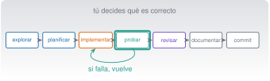

Programación profesional asistida por IA
C5 · Vía C
Versión 0.2.0 · editada el 23/10/2026 · comprobada el 23/10/2026 · Claude Code 2.1.309 (doc.) · pendiente de revisión

Objetivos y prerrequisitos
Objetivos. Al terminar la unidad sabrás:
- recorrer el ciclo explorar → planificar → implementar → probar → revisar → documentar → confirmar con Claude Code sin delegar el criterio;
- escribir una especificación con restricciones y criterios de aceptación que se puedan comprobar;
- usar las pruebas como contrato (desarrollo dirigido por pruebas) en Python y en Julia;
- depurar, refactorizar y revisar código generado por IA, y reconocer sus fallos típicos;
- estructurar código modular con errores controlados, registros, tipos y dependencias declaradas;
- migrar código heredado (MATLAB) a Julia comprobando que el resultado no cambia;
- decidir cuándo usar Python, Julia o un script de shell y cuándo verificar a mano.
Prerrequisitos. C4 (Claude Code, permisos, CLAUDE.md) y C3 (ramas y diff). Familiaridad básica con Python o Julia.
Tiempo orientativo. 8–10 horas. Nivel: intermedio. Herramientas: Python 3.11+ con numpy y pytest (con uv), Julia 1.12, Git y Claude Code.
El código de esta unidad vive en claude/c5-programar/_ejemplo/ (carpetas python/ y julia/), con sus pruebas, y se ejecutó en la redacción: 10 pruebas con pytest (Python 3.14 con uv) y 10 aserciones con Test (Julia 1.12.3), el 23-10-2026. Las salidas numéricas citadas proceden de esas ejecuciones. No se ejecutó MATLAB (no está instalado): la traducción MATLAB → Julia se verificó comparando con la implementación de referencia, no contra MATLAB. Los diálogos con Claude son ilustrativos.
Temas de la unidad
- C5.1 El ciclo explorar, planificar, implementar, probar, revisar, documentar y commit
- C5.2 Prompts técnicos: especificación, restricciones y criterios de aceptación
- C5.3 Tests como contrato: desarrollo dirigido por pruebas
- C5.4 Depuración, refactorización y revisión de código
- C5.5 Arquitectura modular, dependencias, errores, registros y tipos
- C5.6 Documentación, rendimiento y seguridad del código
- C5.7 Código heredado: migrar de MATLAB a Julia
- C5.8 Particularidades de Julia y de Python al trabajar con Claude Code
- C5.9 Cuándo confiar y cuándo verificar a mano; Claude como tutor
Teoría breve
C5.1 El ciclo explorar, planificar, implementar, probar, revisar, documentar y commit
Desarrollar software con un asistente no cambia qué hay que hacer, sino quién hace cada parte y cómo se comprueba. El ciclo completo tiene diez pasos; los cuatro primeros y los cuatro últimos son tuyos aunque Claude te ayude:
| # | Paso | Qué haces tú | Dónde te ayuda Claude |
|---|---|---|---|
| 1 | Requisitos | Decides qué problema resuelves y para quién | Te hace preguntas que no se te habían ocurrido |
| 2 | Diseño | Eliges la estructura y los límites | Propone alternativas y sus costes |
| 3 | Planificación | Fijas pasos y criterios de aceptación | Redacta el plan para que lo corrijas |
| 4 | Implementación | Revisas cada cambio | Escribe el código |
| 5 | Pruebas | Defines qué demuestra que está bien | Escribe y ejecuta pruebas |
| 6 | Depuración | Formulas hipótesis | Lee trazas y propone causas |
| 7 | Revisión | Lees el diff entero | Segunda opinión en un contexto limpio |
| 8 | Documentación | Compruebas que es cierta | Redacta docstrings y README |
| 9 | Control de versiones | Decides qué se confirma | Redacta el mensaje del commit |
| 10 | Entrega reproducible | Compruebas desde cero | Ayuda con entornos y scripts |
La guía de buenas prácticas de Claude Code propone un flujo equivalente (explorar, planificar, implementar, confirmar) y una idea de fondo que adoptamos como regla: dale a Claude una forma de comprobar su propio trabajo (pruebas, una orden con salida esperada) o tendrás que ser tú el único bucle de verificación (Best practices for Claude Code 2026). También avisa de cuándo no planificar: si puedes describir el cambio en una frase (un nombre de variable, una línea de registro), pídelo directamente.
El código que no entiendes ni has verificado no es tuyo todavía. Un asistente acelera la escritura; la responsabilidad (y el criterio de qué es correcto) sigue siendo de quien entrega.
Pon a prueba lo anterior.
¿Qué paso del ciclo no conviene delegar en la IA?
- Escribir el borrador de un docstring.
- Decidir qué comportamiento es el correcto (el criterio de aceptación).
- Proponer nombres de variables.
- Dar formato al código.
Qué es «correcto» depende del problema, de la física y de tus requisitos. La IA no lo conoce salvo que se lo des, y aun así puede equivocarse: ese criterio es tuyo.
C5.2 Prompts técnicos: especificación, restricciones y criterios de aceptación
Un prompt técnico eficaz es una especificación breve. La guía oficial resume el principio: cuanto más precisas las instrucciones, menos correcciones (Best practices for Claude Code 2026). Una plantilla con seis partes:
- Contexto y objetivo: qué es el proyecto y qué se quiere, con el para qué.
- Alcance: qué ficheros o funciones se pueden tocar y cuáles no.
- Comportamiento esperado: entradas, salidas, unidades y casos límite.
- Restricciones: sin dependencias nuevas, compatibilidad, estilo.
- Criterios de aceptación: pruebas que deben pasar y ejemplos con resultado.
- Cómo comprobarlo: la orden que debe ejecutar y mostrar.
Ejemplo malo y ejemplo bueno (ilustrativos):
| Versión | Prompt |
|---|---|
| Vaga | «Haz una función para suavizar la señal.» |
| Específica | «En senales.py, añade media_movil(x, n): media de cada ventana de n muestras consecutivas, sin rellenar los bordes, longitud len(x)-n+1. ValueError si n<1 o n>len(x). Ejemplos: media_movil([1,2,3,4,5],2) == [1.5,2.5,3.5,4.5]. Sin dependencias nuevas. Escribe primero las pruebas y ejecútalas; muéstrame la salida. No toques otros ficheros.» |
Con la segunda, la prueba es la especificación: cualquier implementación que las pase cumple, y puedes comprobarlo tú. Dos recursos adicionales de la guía oficial: dejar que Claude te entreviste («hazme preguntas sobre casos límite y escribe una especificación en SPEC.md») y empezar una sesión nueva para implementar con la especificación como única referencia.
Pon a prueba lo anterior.
Escribe una especificación (seis partes) para una función rms(x) que calcule el valor eficaz de una señal de aceleración.
- Indico entradas, salida y unidades (m/s²).
- Digo si se resta la media y por qué.
- Incluyo al menos un ejemplo con resultado conocido (p. ej., un seno de amplitud A tiene RMS A/√2).
- Digo qué hacer con una lista vacía.
- Pido que ejecute y muestre las pruebas.
C5.3 Tests como contrato: desarrollo dirigido por pruebas
En el desarrollo dirigido por pruebas (test-driven development, TDD) se escribe primero una prueba que falla, después el código mínimo que la hace pasar y por último se limpia (rojo → verde → refactorizar). Con un asistente, las pruebas tienen una segunda función: son el contrato verificable entre tú y el código generado.
# test_senales.py (extracto)
import pytest
from senales import media_movil
def test_media_movil_caso_pequeno():
assert media_movil([1, 2, 3, 4, 5], 2).tolist() == [1.5, 2.5, 3.5, 4.5]
@pytest.mark.parametrize("n", [0, -1, 6])
def test_media_movil_rechaza_ventanas_invalidas(n):
with pytest.raises(ValueError):
media_movil([1, 2, 3, 4, 5], n)pytest encuentra los ficheros test_*.py y las funciones test_*, y muestra los valores intermedios cuando un assert falla (Get Started 2026).
using Test
include("senales.jl")
@testset "media_movil" begin
@test media_movil([1, 2, 3, 4, 5], 2) == [1.5, 2.5, 3.5, 4.5]
for n in (0, -1, 6)
@test_throws ArgumentError media_movil([1, 2, 3, 4, 5], n)
end
endSe ejecuta con julia --project=. runtests.jl; @testset agrupa y resume los resultados.
Qué hace buena a una prueba: cubre casos normales, límite (ventana igual a la serie) y de error (entradas inválidas); comprueba un resultado conocido por otra vía (un seno de amplitud 3 tiene pico a pico 6); y no copia la lógica de la función. Una prueba que repite el cálculo del código no detecta nada.
Cuidado con la IA y las pruebas. Cuando un asistente no consigue que pase una prueba puede modificar la prueba, relajar una tolerancia o escribir código que reconoce el caso del test (hardcoding). La guía de Claude Code lo recoge como patrón de fallo: pide causas raíz, no síntomas. Revisa siempre el diff de los ficheros de prueba y comprueba que no se han debilitado.
Pon a prueba lo anterior.
media_movil([1, 2, 3, 4, 5, 6], 3) devuelve la media de cada ventana de 3 muestras. ¿Cuál es su tercer elemento?
Las ventanas son (1,2,3), (2,3,4), (3,4,5) y (4,5,6), con medias 2, 3, 4 y 5. Longitud: \(6-3+1=4\).
Si la IA hace pasar todas las pruebas, el código es correcto.
Falso. Pasar las pruebas demuestra que cumple lo que esas pruebas comprueban. Pueden ser incompletas, estar debilitadas o reflejar un criterio equivocado. Lee el diff de las pruebas y añade los casos que falten.
C5.4 Depuración, refactorización y revisión de código
Depuración. Método: 1) reproducir el fallo con el caso más pequeño; 2) formular una hipótesis; 3) comprobarla (un print, un depurador, una prueba nueva); 4) corregir la causa, no el síntoma; 5) dejar una prueba que habría fallado antes. A Claude se le da el síntoma, el lugar probable y lo que significa «arreglado»: «media_movil_mala([1,2,3,4,5],2) devuelve 3 valores y esperamos 4; localiza la causa, escribe una prueba que falle y corrígela».
Ejemplo real (_ejemplo/julia/depuracion_mala.jl): el bucle recorre 1:length(x)-n en lugar de 1:length(x)-n+1. Resultado comprobado: devuelve [1.5, 2.5, 3.5] en vez de [1.5, 2.5, 3.5, 4.5], y el @test lo muestra: Evaluated: [1.5, 2.5, 3.5] == [1.5, 2.5, 3.5, 4.5]. Es un error por uno (off-by-one): el clásico de índices y de rangos, y un caso donde una IA acierta o falla según el momento. La prueba de ventana igual a la serie lo detecta.
Refactorización. Es cambiar la estructura sin cambiar el comportamiento. Por eso solo se hace con pruebas en verde antes y después, en un commit aparte, y pidiendo a Claude cambios pequeños (extraer una función, renombrar), no «mejora todo el módulo».
Revisión de código generado por IA. Checklist de este curso:
- ¿Hace lo pedido y nada más? ¿Toca ficheros que no debía?
- ¿Las pruebas son mejores o peores que antes? ¿Alguna se ha borrado o relajado?
- ¿Hay dependencias nuevas? ¿Existen de verdad? (C0.5: paquetes inventados)
- ¿Maneja entradas límite y errores, o supone el caso feliz?
- ¿Hay secretos, rutas absolutas de tu máquina o
eval/execsobre datos externos? - ¿Lo entiendo línea a línea? Si no, lo pregunto o no lo acepto.
- ¿Las unidades y convenciones (índices desde 0 o 1) son las del proyecto?
Para una segunda opinión, la documentación recomienda un revisor en un contexto limpio (una sesión nueva o un subagente) y la skill /code-review, pidiéndole que señale solo lo que afecta a la corrección o a los requisitos, no preferencias de estilo (Best practices for Claude Code 2026).
Pon a prueba lo anterior.
El bucle for i in 1:length(x)-n de una media móvil devuelve una ventana de menos. ¿Qué prueba lo habría detectado mejor?
- Una con una señal aleatoria muy larga.
- Una que solo compruebe que no lanza error.
- Una con la ventana igual a la longitud de la serie, o con longitud de salida esperada.
- Ninguna: es imposible detectarlo.
Los casos límite (ventana igual a la serie, longitud de salida len(x)-n+1) fallan en un error por uno; una señal aleatoria larga o un «no lanza error» no lo revelan.
C5.5 Arquitectura modular, dependencias, errores, registros y tipos
- Funciones pequeñas y con un solo propósito, con docstring:
leer_csv,rms,frecuencia_dominante(el proyecto de C2) se pueden probar por separado; un script de 200 líneas, no. - Separa cálculo (puro, probable) de entrada/salida (leer ficheros, imprimir): lo primero se prueba con datos de juguete.
- Dependencias declaradas y fijadas:
pyproject.toml+uv.locken Python,Project.toml+Manifest.tomlen Julia (C2.7). Añadir una dependencia es una decisión, no un efecto colateral. - Errores controlados: valida entradas y falla pronto con un mensaje claro (
ValueErroren Python,ArgumentErroren Julia); no capturesExceptionsin razón; usa códigos de salida en los scripts (C2.10). - Registros (logs): informan de qué ha pasado y cuándo, sin datos sensibles. En Python, el módulo
logging; en scripts de shell, un fichero con fecha (comoregistro.logde C2). - Tipos: en Python, las anotaciones (
x: np.ndarray) documentan y las comprueban herramientas externas; no se hacen cumplir en ejecución. En Julia, anotar el tipo de un argumento sirve sobre todo para el despacho múltiple y la documentación: la guía de rendimiento indica que el compilador generalmente ya conoce los tipos y que las anotaciones no son la palanca principal de velocidad (Performance Tips 2026).
Pon a prueba lo anterior.
En Python, una anotación de tipo como x: np.ndarray hace que el intérprete rechace otros tipos en tiempo de ejecución.
Falso. Las anotaciones son informativas: las usan editores y comprobadores externos, pero Python no las hace cumplir al ejecutar. Si necesitas rechazar entradas inválidas, valídalas explícitamente.
C5.6 Documentación, rendimiento y seguridad del código
Documentación. Un docstring dice qué hace la función, sus entradas con unidades, la salida y los errores. Un README dice cómo instalar, ejecutar y probar. Pide a Claude el borrador, pero compruébalo ejecutando los ejemplos: la documentación generada suele describir lo que el código debería hacer. En Julia, el docstring va antes de la función (se consulta con ?media_movil).
Rendimiento. Regla: primero correcto, luego medido, después rápido. Mide antes de optimizar (en Julia, @time, y BenchmarkTools para medidas serias, sabiendo que la primera llamada incluye la compilación; en Python, timeit). Dos ideas de la guía de Julia: el código crítico va dentro de funciones (no en el ámbito global) y conviene no cambiar el tipo de una variable ni de una salida (Performance Tips 2026). En Python, vectorizar con numpy suele superar al bucle escrito en Python. Una refactorización «para ir más rápido» sin medir es una conjetura.
Seguridad. Un asistente puede producir código inseguro sin avisar. Revisa: entradas externas sin validar, eval/exec/os.system sobre texto externo, construcción de rutas o de comandos con datos del usuario, secretos en el código, dependencias nuevas sin comprobar (C0.5), y la privacidad de lo que registras. Para las dependencias, comprueba que existen en el registro oficial antes de instalarlas.
Pon a prueba lo anterior.
Claude te propone reescribir una función «para que sea más rápida». ¿Qué haces primero?
- Acepto: la IA sabe optimizar.
- Mido el tiempo actual y con el cambio, con una medida repetible, y compruebo que el resultado no cambia.
- Pido que también cambie el estilo.
- La borro y empiezo de cero.
Sin medida no sabes si hay mejora, y sin pruebas no sabes si cambió el resultado. Primero correcto, luego medido, después rápido.
C5.7 Código heredado: migrar de MATLAB a Julia
Mucho código de ingeniería está en MATLAB. Un asistente es útil para traducirlo, pero la traducción es una tarea de equivalencia: el criterio de éxito es que los resultados coincidan. Método:
- Fija el comportamiento: ejecuta el original con entradas conocidas (si tienes MATLAB) y guarda los resultados como valores de referencia.
- Traduce función a función, no el proyecto entero.
- Escribe pruebas con esos valores de referencia (tolerancia explícita con
isapprox, no==en coma flotante). - Revisa las diferencias del lenguaje (tabla).
| Concepto | MATLAB | Julia |
|---|---|---|
| Índices | Desde 1, x(i) |
Desde 1, x[i] (los de Python empiezan en 0) |
| Rango | x(i:i+n-1) |
x[i:i+n-1] |
| Fin del rango | end |
end (también cierra bloques) |
| Vector columna / fila | Matriz por defecto | Vector y Matrix son tipos distintos |
| Operaciones por elementos | .*, .^ |
.*, .^, y f.(x) para cualquier función |
| Copia al asignar | Por valor (semántica de copia) | Por referencia para los arreglos: b = a no copia; usa copy(a) |
| Funciones | Un fichero por función | Varias funciones por fichero, módulos |
Ejemplo (_ejemplo/julia/migracion.jl). El original en MATLAB:
function y = mediamovil(x, n)
N = length(x);
y = zeros(1, N-n+1);
for i = 1:N-n+1
y(i) = mean(x(i:i+n-1));
end
endLa traducción a Julia, casi línea a línea:
using Statistics
function mediamovil(x, n)
N = length(x)
y = zeros(N - n + 1)
for i in 1:N-n+1
y[i] = mean(x[i:i+n-1])
end
return y
endResultado comprobado: mediamovil([1,2,3,4,5], 2) da [1.5, 2.5, 3.5, 4.5], igual que media_movil (la implementación de referencia con sumas acumuladas): true. No se ha ejecutado el original en MATLAB. La trampa más frecuente al migrar es la copia de arreglos por referencia; otra es traducir y = zeros(1, N) a un Matrix de una fila en lugar de a un Vector.
Pon a prueba lo anterior.
En Julia, b = a con a un vector. Después haces b[1] = 99. ¿Qué le pasa a a[1]?
- Nada:
bes una copia. - Da un error.
- También vale 99:
aybson el mismo objeto; para copiar hay que usarcopy(a). - Vale 0.
En Julia la asignación de un arreglo enlaza el mismo objeto (no lo copia). Es una de las diferencias más peligrosas al migrar desde MATLAB, donde la asignación se comporta como una copia.
C5.8 Particularidades de Julia y de Python al trabajar con Claude Code
| Python | Julia | |
|---|---|---|
| Índices | Desde 0 | Desde 1 |
| Rango | x[a:b] excluye b |
x[a:b] incluye b |
| Entorno | uv (pyproject.toml) |
Project.toml / Manifest.toml |
| Pruebas | pytest |
Test (@test, @testset) |
| Primera ejecución | Rápida | La primera llamada compila (más lenta) |
| Errores típicos de una IA | Mezclar versiones de bibliotecas | Mezclar la sintaxis de Python/MATLAB; olvidar . en operaciones vectoriales |
| Paquetes inexistentes | Posible | Posible: comprueba el registro (C0.5) |
Ejemplo comprobado de la diferencia de índices. Sobre los datos del caso E (e_vibracion.csv, 4096 muestras), los 23 máximos locales superiores a 0,8 m/s² están, en Python, en los índices [1080, 1660, 1675, …] y, en Julia, en [1081, 1661, 1676, …]: los mismos picos, con un desplazamiento de 1. Si una IA «traduce» entre lenguajes sin cambiar la convención, el resultado es silenciosamente erróneo. Pide siempre que indique la convención de índices y pruébala.
Cuándo usar cada herramienta:
| Tarea | Mejor opción | Por qué |
|---|---|---|
| Cálculo numérico propio, simulación, rendimiento | Julia | Rápido, sintaxis matemática, paquete del curso |
| Ecosistema de datos, pruebas, integración con servicios | Python | Bibliotecas, uso extendido |
| Mover ficheros, encadenar programas, automatizar tareas | Script de shell (Zsh o PowerShell) | Nativo y breve (C2) |
| Algo que se repite y debe ser auditable | Script con registro y códigos de salida | Reproducible |
El curso usa Julia primero y deja pestañas Python donde ayudan; no es una guerra de lenguajes: elige por el problema y por lo que puedas verificar.
Pon a prueba lo anterior.
Un pico está en el índice 1080 (Python). ¿Cuál es su índice en Julia, sobre la misma señal?
- 1080
- 1079
- 1082
- 1081
Python cuenta desde 0 y Julia desde 1: el mismo elemento tiene un índice una unidad mayor en Julia (comprobado con la señal del caso E).
C5.9 Cuándo confiar y cuándo verificar a mano; Claude como tutor
Verifica más cuanto más grave, irreversible o difícil de comprobar sea la consecuencia. Una guía práctica:
| Situación | Qué haces |
|---|---|
| Tarea trivial, reversible, con prueba (renombrar, formatear) | Revisas el diff por encima |
| Lógica nueva con pruebas que has leído | Ejecutas tú las pruebas y lees el diff |
| Cálculo que acaba en un informe firmado | Recalculas con otra vía independiente (otra herramienta o a mano) |
| Seguridad, datos personales, permisos | Revisión humana completa; nunca solo la IA |
| Algo que no entiendes | No lo aceptas hasta entenderlo |
La guía oficial lo resume como un patrón de fallo: «confiar y luego verificar» deja un hueco; si no puedes verificarlo, no lo entregues (Best practices for Claude Code 2026).
Claude como tutor. También puedes usarlo para aprender en vez de delegar: «explícame esta función línea a línea, sin cambiar nada», «¿qué casos límite no cubren mis pruebas?», «dame un ejercicio parecido sin resolverlo». Aprende más quien intenta primero y pide la corrección después. Si solo aceptas código, no aprendes lo que necesitarás cuando falle.
- Aceptar código que no entiendes «porque pasa las pruebas».
- Pedir cambios enormes en un solo paso: el diff es imposible de revisar. Trabaja en pasos pequeños.
- Mezclar refactorización y funcionalidad nueva en un commit.
- No fijar la convención de índices o de unidades al cruzar lenguajes.
- Confiar en la documentación generada sin ejecutar los ejemplos.
- Sesiones eternas: tras varias correcciones fallidas,
/cleary un prompt mejor (C4.5).
Pon a prueba lo anterior.
Escribe un prompt para usar a Claude como tutor (no como autor) de una función que has escrito tú.
- Pido una explicación o revisión, no que reescriba el código.
- Pido casos límite que mis pruebas no cubren.
- Pido que marque lo que no puede saber sin ejecutarlo.
- Me reservo la decisión de qué cambios aplico.
Práctica guiada
Requiere cuenta (los pasos con Claude Code) · Local gratuita (el resto) · Diálogos ilustrativos; el código y los resultados de abajo se ejecutaron.
Ficha. Objetivo: desarrollar detectar_picos con TDD y Claude Code en Python y Julia, depurar una versión con un error y comprobar que ambos lenguajes dan el mismo resultado. Archivos: claude/c5-programar/_ejemplo/ (python/senales.py, python/test_senales.py, julia/senales.jl, julia/runtests.jl, julia/depuracion_mala.jl, julia/migracion.jl) y datos/sinteticos/curso-claude/e_vibracion.csv. Versiones: Python 3.11+, Julia 1.12, numpy, pytest. Resultado esperado: ver abajo. Problemas frecuentes: olvidar el desplazamiento de índices; no ejecutar las pruebas tú.
- Copia la carpeta
_ejemploa tu espacio de trabajo y crea una rama (git switch -c practica/c5). - Línea base:
uv run --with numpy --with pytest pytest python→ 10 passed;julia --project=. julia/runtests.jl→ todas las pruebas en verde (media_movil6/6 ydetectar_picos4/4). - TDD con Claude: borra (en tu copia) la función
detectar_picosde Python y pide: «Implementadetectar_picos(x, umbral)según estas pruebas, sin cambiar los ficheros de prueba. Máximo local estricto, mayor que el anterior y el siguiente y queumbral; los extremos no cuentan; índices desde 0. Ejecuta las pruebas y muéstramelas.» Revisa el diff y quetest_senales.pyno ha cambiado (git diff --stat). - Depura: carga
julia/depuracion_mala.jly comprueba quemedia_movil_mala([1,2,3,4,5], 2)da 3 valores. Antes de pedir ayuda, localiza tú la causa; después pide a Claude que escriba la prueba que falla y la corrección. - Cruza lenguajes con los datos del caso E: ejecuta
detectar_picoscon umbral 0,8 en Python y en Julia. Resultado esperado (comprobado el 23-10-2026): 23 picos; primeros índices[1080, 1660, 1675]en Python y[1081, 1661, 1676]en Julia; la media móvil conn = 5empieza por[-0.04464, -0.05024, -0.05986]en ambos. - Migra
mediamovil(MATLAB) con Claude y comprueba que coincide conmedia_movilen el ejemplo[1,2,3,4,5],n=2. - Revisa y confirma con la lista de C5.4. Haz commits separados (la prueba, la función, la corrección).
Qué has aprendido: las pruebas son el contrato, los casos límite cazan los errores por uno, y cruzar lenguajes exige fijar la convención de índices.
«Pídeselo a Claude»
Te pego una función de Python que he escrito para calcular el valor eficaz de una señal y sus pruebas. Actúa como revisor, sin reescribir nada: 1) di qué casos límite no cubren las pruebas; 2) señala entradas que podrían romper la función (lista vacía, NaN, tipos); 3) indica qué afirmaciones de tu revisión no puedes comprobar sin ejecutar el código; 4) propón, sin implementarlas, tres pruebas nuevas con su resultado esperado calculado a mano.
Verifica.
- Ejecuta tú las tres pruebas propuestas: ¿el resultado esperado que dio Claude es correcto? Calcúlalo por otra vía.
- ¿Detectó de verdad un caso límite que tú no habías visto, o repite generalidades?
- ¿Señaló lo que no puede saber sin ejecutar, o lo presenta todo como cierto?
- ¿Respetó «sin reescribir nada»? Comprueba con
git status.
Ejercicios
Especificación. Convierte «haz algo con los picos» en una especificación de seis partes para
detectar_picos(usa la de C5.2 como modelo).Pruebas primero. Escribe (sin implementar) cinco pruebas para una función
rango_dinamico(x)= máximo menos mínimo, incluyendo vacío y un solo elemento. Decide el comportamiento en esos casos y justifícalo.NotaSoluciónVacío: elevar un error claro (no hay máximo). Un elemento: rango 0. Otros: constante (0), creciente (último − primero), con negativos, con NaN (decide: error o propagar). Lo importante es decidir y dejarlo escrito.
Revisión. Claude te entrega una función y «las pruebas pasan». El diff incluye un cambio en
test_*.pyque sube la tolerancia de1e-9a1e-2. ¿Qué haces?NotaSoluciónNo lo aceptas sin entenderlo: una tolerancia 10⁷ veces mayor puede ocultar un error. Pide la causa del fallo original, restaura la tolerancia y exige que se corrija el código o se justifique numéricamente.
Migración. Traduce a Julia una función MATLAB de tu elección (o
y = cumsum(x)/(1:length(x))'), escribe pruebas con valores de referencia y explica una diferencia de lenguaje que te haya afectado.Dos lenguajes. Ejecuta
detectar_picosen Python y en Julia sobree_vibracion.csvcon umbral 0,5 y compara los recuentos y los índices. ¿Qué desplazamiento observas y por qué?NotaSoluciónMismos picos; los índices de Julia son los de Python más 1, porque Python cuenta desde 0 y Julia desde 1. Los recuentos coinciden. (Comprueba que no hay otro desfase por redondeos.)
La doy por superada si…
- Recorro el ciclo completo y sé qué pasos son míos aunque use un asistente.
- Escribo una especificación con restricciones, ejemplos y criterios de aceptación comprobables.
- Escribo pruebas (normales, límite, de error) en Python y en Julia, y detecto cuando una IA las debilita.
- Depuro con método y dejo una prueba que habría fallado.
- Refactorizo sin cambiar el comportamiento y en un commit separado.
- Reviso código generado con una lista y no acepto lo que no entiendo.
- Migro una función de MATLAB a Julia verificando la equivalencia.
- Distingo la convención de índices y la semántica de copia entre lenguajes.
- Elijo con criterio entre Python, Julia y un script de shell, y sé cuándo verificar a mano.
Referencias de esta unidad
Documentación consultada el 23-10-2026: buenas prácticas de Claude Code, consejos de rendimiento de Julia y primeros pasos con pytest.
Referencias
Son las mismas que aparecen en el margen, junto al texto. La lista completa del curso, con el estado de verificación de cada ficha, está en recursos/bibliografia.bib del repositorio.
Best practices for Claude Code. 2026. Documentación de Claude Code (Anthropic), consultada el 23-10-2026. https://code.claude.com/docs/en/best-practices.
Get Started. 2026. Documentación de pytest, consultada el 23-10-2026. https://docs.pytest.org/en/stable/getting-started.html.
Performance Tips. 2026. Manual de Julia, consultado el 23-10-2026. https://docs.julialang.org/en/v1/manual/performance-tips/.